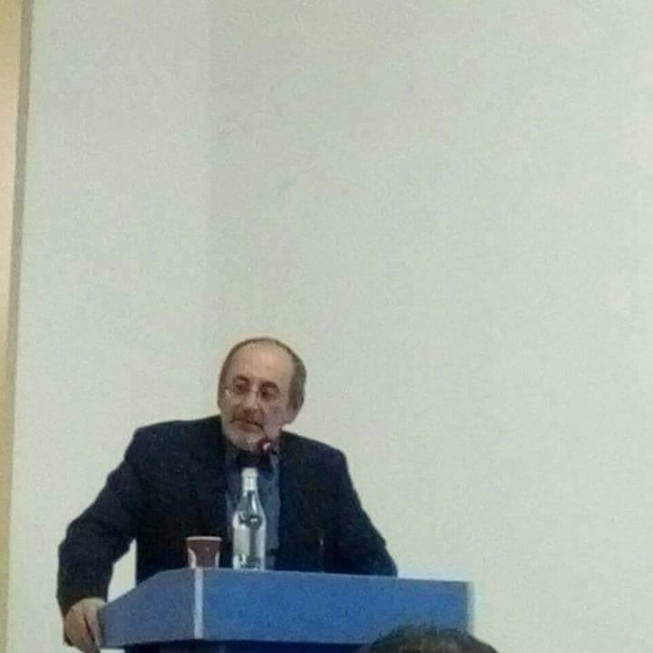

Наши Специалисты
Наша цель - это работа во благо клиента, для этого мы постоянно повышаем свои профессиональные навыки, посещаем супервизионные и интервизионные группы, и личную психотерапию.
Наша цель - это работа во благо клиента, для этого мы постоянно повышаем свои профессиональные навыки, посещаем супервизионные и интервизионные группы, и личную психотерапию.

Запись
Запись
09.2010-06.2014
Ереванский Государственный Университет
Специальность: «Психология» (Бакалавриат)
09.2014-06.2016
Московский Государственный Университет имени М.В. Ломоносова
Специальность: «Социальная психология развития» (Магистратура)
12.08.2012
Принят на работу в психологический центр «Анима» (г. Ереван) в качестве психолога-консультанта.
ЕГУ кафедра клинической и социальной психологии. Директор Центра психологических
исследований «Анима»
Проведение психологической диагностики, индивидуальной, групповой психотерапии, психологических исследований с использованием различного инструментария (тесты, опросники).
Владение различными психодиагностическими, личностными, психотерапевтическими методиками, подходами, обработка полученных результатов.
Проведение психологических консультаций.